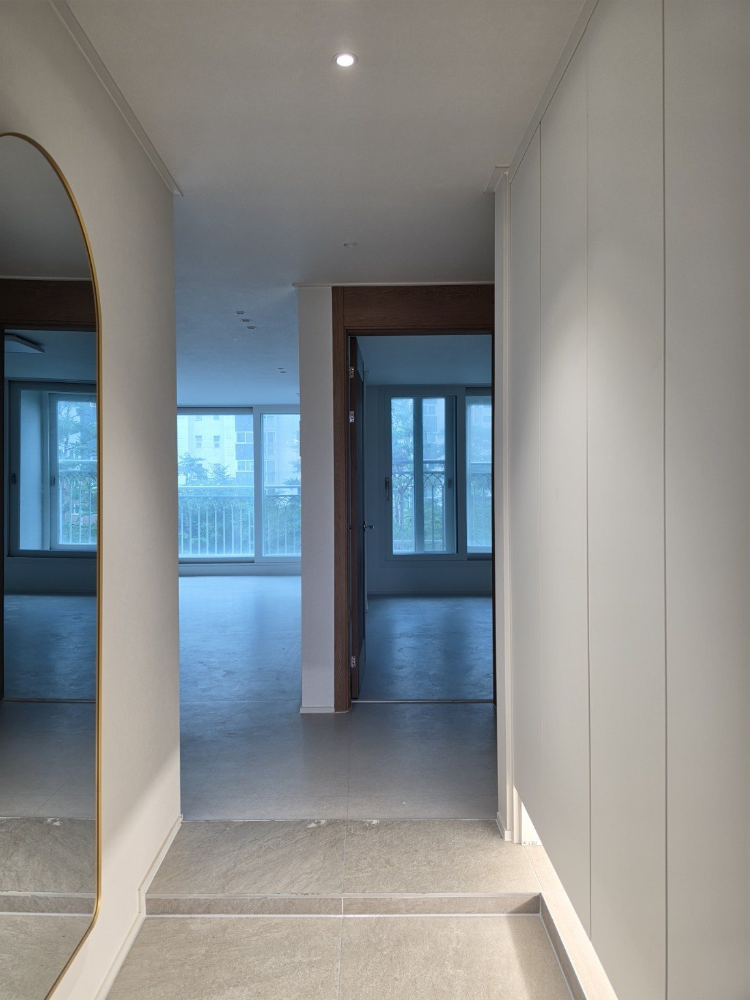
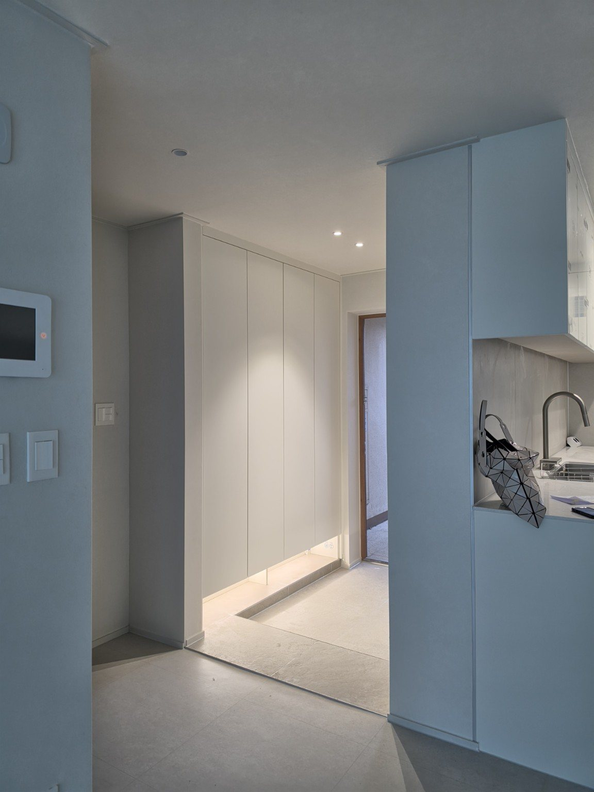
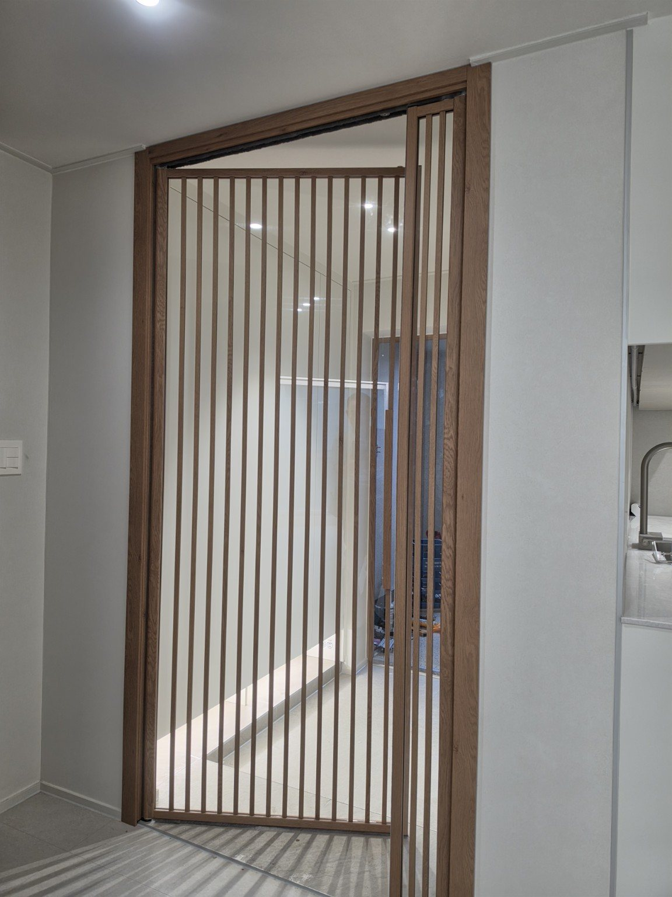
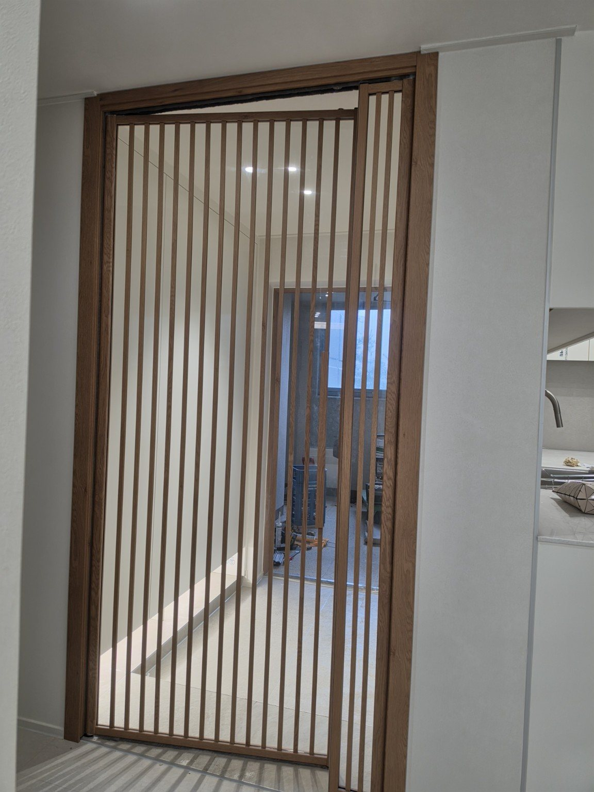
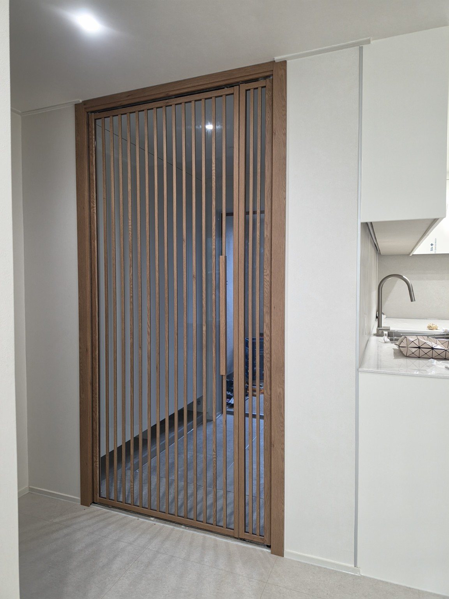
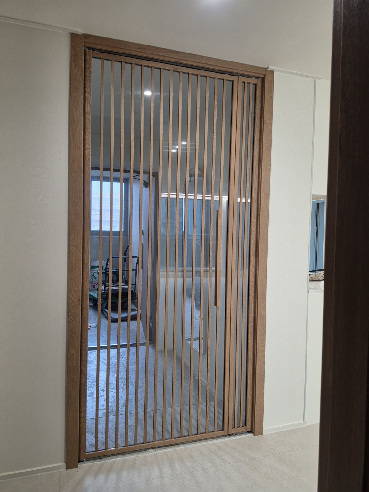
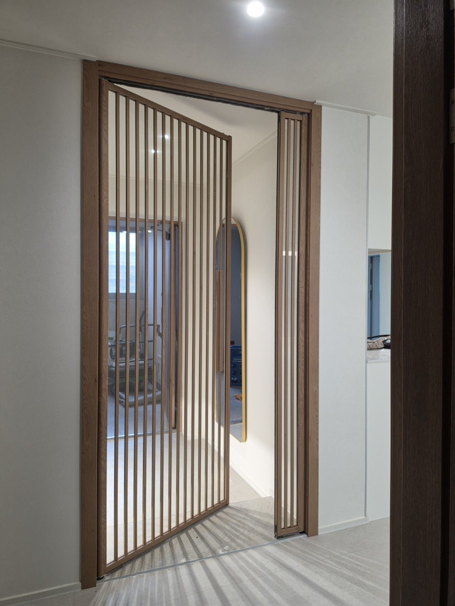
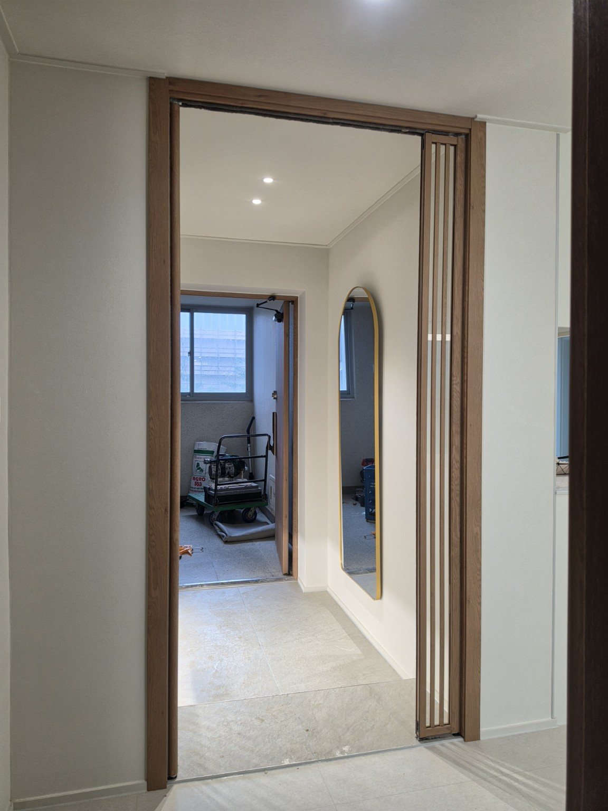
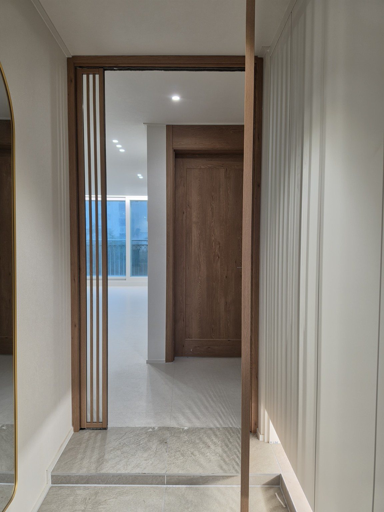

홈 › 동탄 현관중문 시공사례
동탄 메타폴리스로22 메타역 롯데캐슬 306동 33평
양방향 여닫이 간살 현관중문
동탄 메타역 롯데캐슬 306동 33평 현장에 간살 디자인을 적용한 양방향 여닫이 현관중문을 시공했습니다. 세로 간살이 현관에 또렷한 디자인 포인트를 만들고, 양쪽 방향으로 열 수 있어 출입 동선을 편리하게 사용할 수 있도록 구성한 사례입니다.
동탄 메타폴리스로22 메타역 롯데캐슬 306동 33평
중문 형태
양방향 여닫이 현관중문
디자인
간살 디자인
시공 특징
이번 현장은 현관과 실내 사이에 간살 디자인의 여닫이 중문을 설치했습니다. 반복되는 세로 간살은 단순한 평면형 도어와 다른 입체감을 주며 현관 공간의 포인트가 됩니다.
문은 양방향 여닫이 방식으로 구성해 현관에서 실내로 들어올 때와 실내에서 현관으로 나갈 때 모두 동선에 맞춰 열 수 있도록 했습니다. 중문은 현장 폭과 주변 구조를 고려해 제작·시공하는 것이 중요합니다.
동탄 메타역 롯데캐슬 시공사진










묻고 답하기
어떤 현관중문을 시공했나요?
동탄 메타폴리스로22 메타역 롯데캐슬 306동 33평에 간살 디자인 양방향 여닫이 중문을 시공했습니다.
양방향 여닫이 중문은 어떤 방식인가요?
현관 안쪽과 실내 쪽 양쪽 방향으로 열 수 있어 출입 방향에 맞춰 사용할 수 있는 방식입니다.
간살 중문의 특징은 무엇인가요?
반복되는 세로 간살이 현관에 디자인 포인트를 주면서 공간을 자연스럽게 구분해 줍니다.
다른 아파트에도 같은 디자인으로 시공할 수 있나요?
가능하지만 현장 폭과 구조에 따라 문 크기와 구성을 조정하는 맞춤 제작이 적합합니다.
현관중문 시공·견적 상담
문다라는 2003년부터 현관중문을 직접 제작·시공하고 있습니다. 서울·경기 지역 현장 구조에 맞춰 상담해 드립니다.
전화 상담 010-2432-1107